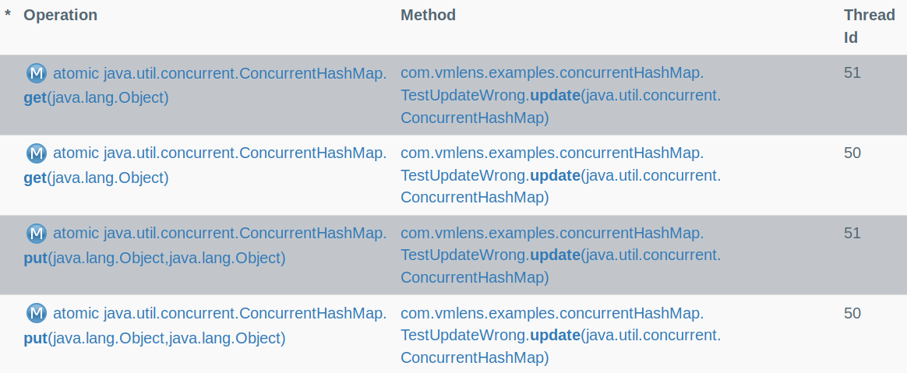
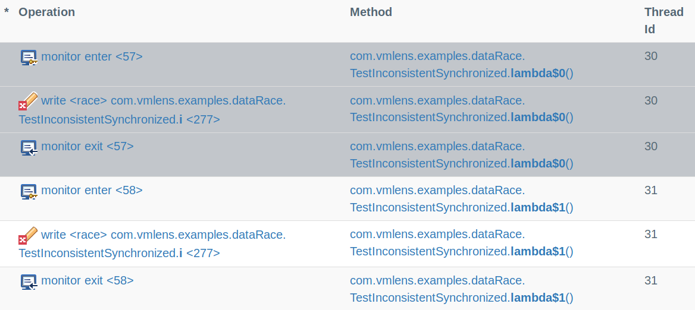
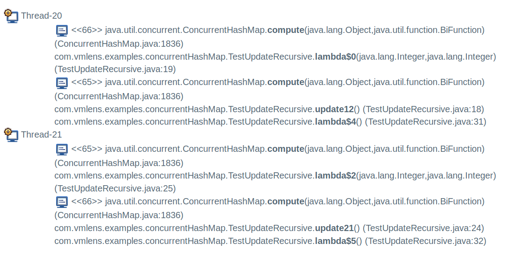

Using vmlens
The following example shows how to write multi-threaded tests with vmlens. All examples are in this GitHub project:
import com.vmlens.api.AllInterleavings;
public class TestUpdateWrong {
public void update(ConcurrentHashMap<Integer, Integer> map) {
Integer result = map.get(1);
if (result == null) {
map.put(1, 1);
} else {
map.put(1, result + 1);
}
}
@Test
public void testUpdate() throws InterruptedException {
try (AllInterleavings allInterleavings =
new AllInterleavings("TestUpdateWrong");) {
// surround the test with a while loop, iterationg over
// the class AllInterleavings
while (allInterleavings.hasNext()) {
final ConcurrentHashMap<Integer, Integer> map =
new ConcurrentHashMap<Integer, Integer>();
Thread first = new Thread(() -> {
update(map);
});
Thread second = new Thread(() -> {
update(map);
});
first.start();
second.start();
first.join();
second.join();
assertEquals(2,map.get(1).intValue());
}
}
}
}
In your test method, you surround the code you want to test with a while loop iterating over the class AllInterleavings. vmlens executes the block inside the while loop multiple times, for each thread interleaving once. If the test fails vmlens shows the thread interleaving which led to the failure. If the test succeeds vmlens shows the last thread interleaving.
The above example test fails, and vmlens reports the interleaving which led to the failed assertion:

In maven, you can see this report by clicking on the link TestUpdateWrong in the file target/interleave/elements.html. In eclipse you can see the report by clicking on the link TestUpdateWrong in the view under Window -> Show View -> Other... -> vmlens -> vmlens Explorer.
The maven reports are described here. The eclipse views are described here.
How to run the test
You can run the test in eclipse using the vmlens run short cut for JUnit. Right click on the JUnit class -> Run As -> JUnit Test traced with vmlens.
To run the test with maven put the vmlens interleave plugin in your maven pom.xml as described here.
Data races
vmlens analyses a trace of the test run to detect data races and deadlocks. A data race happens when reading and writing to a shared variable is not correctly synchronized. A data race means that thread might read stale or inconsistent values.
The following example shows a data race in an inconsistent synchronized test.
public class TestInconsistentSynchronized {
private static final Object LOCK_1 = new Object();
private static final Object LOCK_2 = new Object();
int i = 0;
@Test
public void test() throws InterruptedException {
try (AllInterleavings allInterleavings =
new AllInterleavings
("TestInconsistentSynchronized");) {
while (allInterleavings.hasNext()) {
Thread first = new Thread(() -> {
synchronized (LOCK_1) {
i++;
}
});
Thread second = new Thread(() -> {
synchronized (LOCK_2) {
i++;
}
});
first.start();
second.start();
first.join();
second.join();
}
}
}
}
For the above test, vmlens reports the interleaving which led to the data race:

In maven, you can see this report by clicking on the link TestInconsistentSynchronized in the file target/interleave/elements.html. In eclipse you can see the report by clicking on the link TestInconsistentSynchronized in the view under Window -> Show View -> Other... -> vmlens -> vmlens Explorer.
The maven reports are described here. The eclipse views are described here.
Deadlocks
To detect a deadlock during a test run both threads need to request the locks at the exact same time. To make deadlock detection timing independent, vmlens analysis the order in which the threads request the locks. If this order contains a cycle vmlens has found a deadlock.
public class TestUpdateRecursive {
private final ConcurrentHashMap<Integer, Integer>
map = new ConcurrentHashMap<Integer, Integer>();
public TestUpdateRecursive() {
map.put(1, 1);
map.put(2, 2);
}
public void update12() {
map.compute(1, (key, value) -> {
map.compute(2, (k, v) -> {
return 2;
});
return 2;
});
}
public void update21() {
map.compute(2, (key, value) -> {
map.compute(1, (k, v) -> {
return 2;
});
return 2;
});
}
@Test
public void testUpdate() throws InterruptedException {
try (AllInterleavings allInterleavings =
new AllInterleavings("TestUpdateRecursive");) {
while (allInterleavings.hasNext()) {
Thread first = new Thread(() -> {
update12();
});
Thread second = new Thread(() -> {
update21();
});
first.start();
first.join();
second.start();
second.join();
}
}
}
}
For the above test vmlens generates the following report:

In maven, you can see this report by opening the file target/interleave/issues.html. In eclipse you can see the report by opening the view under Window -> Show View -> Other... -> vmlens -> vmlens Issues.
The maven reports are described here. The eclipse views are described here.
Tips for writing multi-threaded tests
When writing multi-threaded tests using vmlens you should follow the following tips:
- Make your tests repeatable: vmlens executes the code inside the while loop multiple times. So your code inside the while loop must be repeatable.
- Use few threads: There is no need to use many threads to make the chances higher to execute a specific thread interleaving. Since vmlens executes all thread interleavingfs it is often better to use only a small amount of threads.